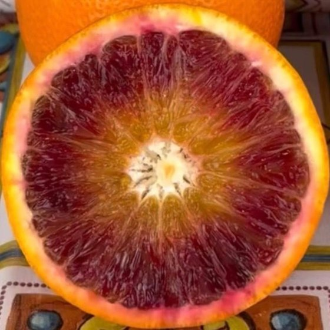

Tarocco-Blutorangen (Verzehr)
Dez – Apr
Süß, aromatisch und saftig mit leichter Säure. Fruchtfleisch rot marmoriert.
Mehr erfahren
- Geschmack
- Süß, aromatisch, saftig und leicht säuerlich.
- Farbe
- Orange bis rötlich, Fruchtfleisch orange bis kräftig rot marmoriert.
- Kerne
- Meist kernlos bis sehr kernarm.
- Saison
- Etwa Dezember bis April, Hauptsaison Januar bis März.
- Lagerung
- Kühl, trocken und luftig, regelmäßig kontrollieren. Etwa 2–3 Wochen haltbar.